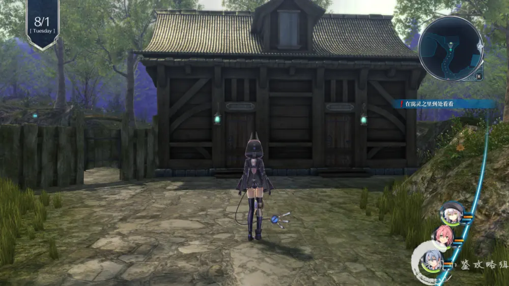
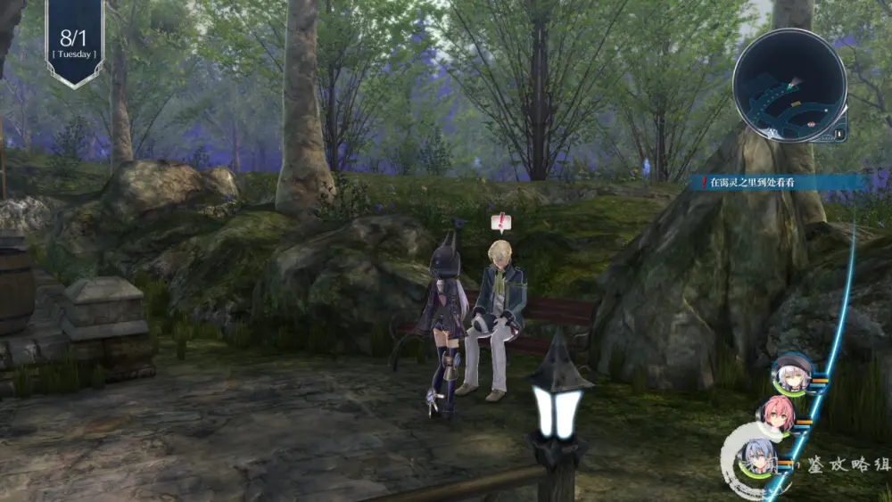
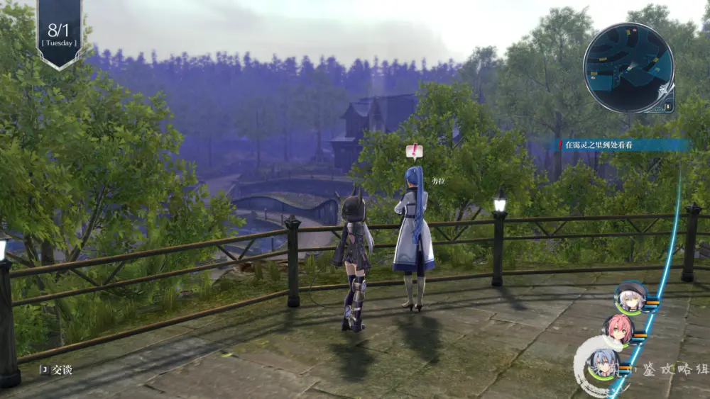
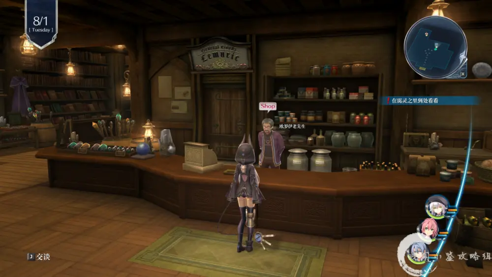

英雄传说：闪之轨迹IV·完美攻略·终版（1）
英雄传说：闪之轨迹IV完美攻略·终版
出品：浅闻小鉴攻略组
作者：夏浅线。
文本精校：Mr.Μǎ Lip
攻略前言：
本攻略包括全敌人信息收集·全料理收集·全回路收集·全人物信息·全宝箱·全钓鱼·全AP等
特别感谢：B站UP主KloseRinz·以及她的团队给与的简体中文汉化支持！
首先进入游戏后从头开始游戏·选择难度后会有提示
注：
1·闪之轨迹I改/II改不需要玩多长的时间·有存档就好·就可获得联动特典
2·想拿英雄传说：闪之轨迹IV完美开局特典的·可在Q群内下载闪之轨迹IV继承存档
「闪之轨迹I改」联动特典
七种耀晶片各200个·耀晶石块200个·攻击2（回路）
「闪之轨迹II改」联动特典
七种耀晶片各200个·耀晶石块200个·行动力2（回路）
「闪之轨迹III」联动特典
U物质20个
读取英雄传说：闪之轨迹III通关存档
黎恩等级达到64级：生命露水/力量露水/守护露水/魔力露水/心灵露水各1个
黎恩等级达到65级-74级：生命露水/力量露水/守护露水/魔力露水/心灵露水各2个
天使羊波波露水1个
黎恩等级达到75级 ：生命露水/力量露水/守护露水/魔力露水/心灵露水各3个
天使羊波波露水2个·还魂粉1个
黎恩学生阶级甲零级：黄金徽章
黎恩学生阶级甲一级：白银徽章
黎恩学院等级达到一流·获得：精灵香2个
黎恩学院等级达到名门·获得：精灵香2个·龙神香1个
黎恩教官阶级达到A+·获得：斗士奖章·HP+1000·STR+10·命中率+50%·能力低下无效（饰品）
黎恩教官阶级达到S·获得：霸者奖章·HP+2000·STR+20·命中率+100%·能力低下无效（饰品）
以上奖励需要游戏进行到某个程度才会解锁
并且会继承一些剧情
序幕
变化的世界~来自黑暗深渊~
8月1日
兰花塔·下层外围
注意：序章的敌人是可以调查的
回复装置：1个
兰花塔·下层中枢
宝箱2个：全回复药·EP填充剂IV
EXTRA新敌人共2个：泥人偶·精灵女王
记得收集情报
触发剧情·战斗·战斗后剧情
关于本区域新敌人：
只要小浅写在攻略上的·都是能在这个区域内打到的·当然可能下个区域更好打
有一些是随怪在战斗中出现的·但是在下个区域可能会以实体出现在地图上
所以什么时候打自行斟酌·之后不会另行叙述
兰花塔·下层外围（新区域）
宝箱1个：圣灵药·改
EXTRA新敌人共1个：盘旋编织者
记得收集情报
兰花塔·下层中枢（新区域）
宝箱1个：勇气灵魂
EXTRA新敌人共1个：智能探查者
记得收集情报
走到红色感叹号处·触发战斗
升降梯·前往上层·触发战斗
兰花塔·上层中枢
回复装置：1个
宝箱2个：精灵香·还魂粉
EXTRA新敌人共3个：黑之艾尔贝里希·根源玛丽亚贝尔·克蕾雅少校
记得收集情报
走到红色感叹号处·触发剧情·战斗
战斗中打掉对方到红线血后·对方会撤退·触发剧情
第II分校宿舍
所在二楼
走到红色感叹号处·调查门·触发剧情
一楼
走到红色感叹号处·触发剧情
二楼
绿色星号处·全部对话·触发剧情
三楼
注意：本楼的蓝色星号目前调查不了
走到红色感叹号处·调查门·开门进去·触发剧情
隐密村里霭灵
★剧情解锁一系列人物
走到绿色星号处·触发剧情

和地图内的红色感叹号处的人物·全部对话
★尤西斯对话·解锁缪洁人物

★劳拉对话·获得劳拉人物信息：失落感

★杂货店《雷姆利克》内·掌柜欧罗伊老先生可买：帝国时报·第1号

全部对话结束后·切换场景·触发剧情
剧情后回到罗赛的工作室·调查门·回到工作室·触发剧情
序幕无AP

随便聊聊：
闪之轨迹IV·完美攻略·终版·正式连载
希望各位会喜欢
如果大家觉得攻略写的还可以 欢迎大家充电支持我们
您的每一次充电 是对攻略组的支持和鞭策
也是对我们作品的认可 以及继续做下去的动力！
小浅在这里先拜谢各位老爷小姐（鞠躬
另外攻略连载完结后·群内将提供付费攻略的Pdf版下载
欢迎各位催更
Q群：907289369
等待各位来撩